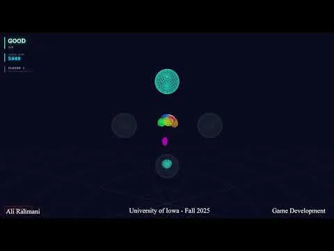

About Me
Hi! I'm Ali Rahmani, a PhD student in Informatics at the University of Iowa, working in the HoloReality Lab. My current work spans AI-driven VR training for teachers, biometric-adaptive VR eye exams, assistive tools for low-vision users, and wearable ML for motion coaching. Before Iowa, I earned an MSc in Computer Engineering (AI) and a BSc in Software Engineering in Tehran, where I spent several years building VR systems for cognitive and brain research.
Outside research, I lift weights, cycle, and shoot timelapses.
Research Interests
- Human-Computer Interaction
- AI-Assisted Immersive Learning
- Multimodal and Biometric Sensing
- Applied Machine Learning
- Assistive and Accessible Technology
- Extended Reality
Publications
HydroVerse Education: An AI-Assisted Education Framework for Immersive Learning and Training Environments
Rahmani, A., Sermet, Y., & Demir, I. — Journal of Hydroinformatics, IWA Publishing
HydroVerse VR Equipment Hub: An Integrated VR Framework for Training and Workforce Development in Environmental Monitoring
Rahmani, A., Sermet, Y., & Demir, I.
HydroVerse Immersive Virtual Conference Environments with Metahuman AI: A New Paradigm for Interactive Scientific Research Communication and Engagement
Rahmani, A., Sermet, Y., & Demir, I.
Enhancing hydroinformatics education through virtual reality and AI integration
Rahmani, A., et al. — Proceedings of the International Environmental Modelling and Software Society (iEMSs)
FloodSim Sandbox: Leveraging real-time fluid simulation in flood visualization
Rahmani, A., et al. — Proceedings of iEMSs
Enhancing hydrological data visualization through extended reality: A framework for environmental decision-making
Rahmani, A., et al. — Proceedings of iEMSs
Enhancing hydroinformatics research, operation, and education through virtual reality, artificial intelligence, and gaming
Sermet, Y., Gonzalez, E., Rahmani, A., Emiroglu, E., Grant, C. A., & Demir, I. — CIROH Training and Developers Conference
Dental caries risk assessment in children 5 years old and under via machine learning
Rahmani, A., et al. — Dentistry Journal, 10(9), 164
Projects

Interactive Murmuration
A gesture and posture-based memory game where you control a swarm of birds with your body, built with computer vision, WebGPU, and Three.js.
View project →Teaching
- Internet of Things — Teaching Assistant, Computer Engineering, University of Iowa (Spring 2026). Office hours, grading, and support on hardware-integration and embedded projects.
- Research mentoring — XR and embedded-systems student projects.
Service & Honors
- Reviewer — Asia Pacific Education Review (Springer Nature, 2026)
- Reviewer — Journal of Public Health Dentistry (Wiley, 2024)
- IEEE-HKN (Eta Kappa Nu) — inducted member, Beta Iota Chapter
- IEEE & ACM — Student Branch / Chapter, University of Iowa
Timelapses
Timelapses I have shot and edited. A few favorites play right here; more are on my channel.
Iowa River
Riverfront
Aurora
Night sky
Evening and Night, Pentacrest
Campus at dusk
Photography
A few frames from around Iowa City and beyond.